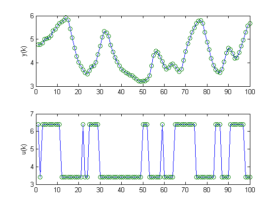
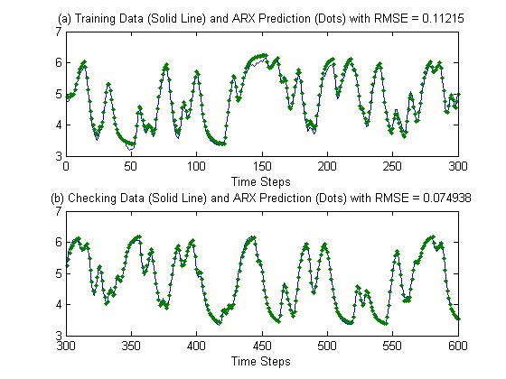
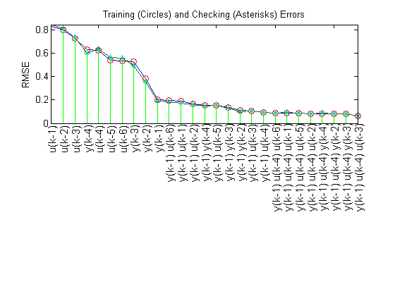
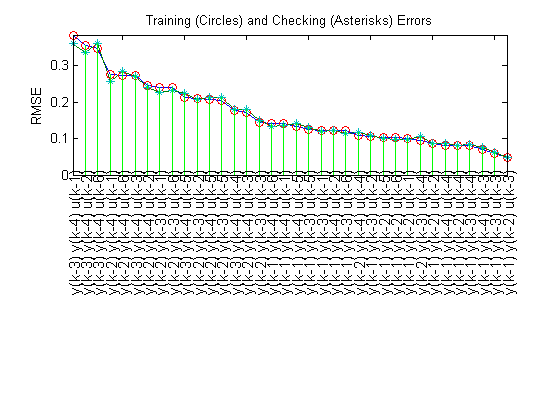
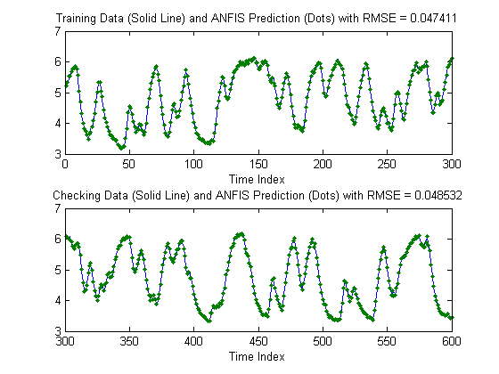
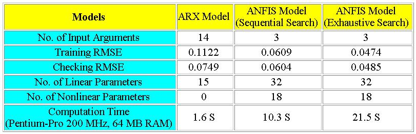

Nonlinear System Identification
This demo addresses the use of ANFIS function in the Fuzzy Logic Toolbox™ for nonlinear dynamical system identification. This demo also requires the System Identification Toolbox™, as a comparison is made between a nonlinear ANFIS and a linear ARX model.
% Exit if the IDENT toolbox is not on the path if exist('arx.m','file') == 0 errordlg('DRYDEMO requires the System Identification Toolbox.'); return; end
The data set for ANFIS and ARX modeling was obtained from a laboratory device called Feedback's Process Trainer PT 326, as described in Chapter 17 of Prof. Lennart Ljung's book "System Identification, Theory for the User", Prentice-Hall, 1987. The device's function is like a hair dryer: air is fanned through a tube and heated at the inlet. The air temperature is measure by a thermocouple at the outlet. The input u(k) is the voltage over a mesh of resistor wires to heat incoming air; the output y(k) is the outlet air temperature. Here is a the system model
Here are the results of the test.
load dryer2; data_n = length(y2); output = y2; input = [[0; y2(1:data_n-1)] ... [0; 0; y2(1:data_n-2)] ... [0; 0; 0; y2(1:data_n-3)] ... [0; 0; 0; 0; y2(1:data_n-4)] ... [0; u2(1:data_n-1)] ... [0; 0; u2(1:data_n-2)] ... [0; 0; 0; u2(1:data_n-3)] ... [0; 0; 0; 0; u2(1:data_n-4)] ... [0; 0; 0; 0; 0; u2(1:data_n-5)] ... [0; 0; 0; 0; 0; 0; u2(1:data_n-6)]]; data = [input output]; data(1:6, :) = []; input_name = str2mat('y(k-1)','y(k-2)','y(k-3)','y(k-4)','u(k-1)','u(k-2)','u(k-3)','u(k-4)','u(k-5)','u(k-6)'); index = 1:100; subplot(2,1,1); plot(index, y2(index), '-', index, y2(index), 'o'); ylabel('y(k)'); subplot(2,1,2); plot(index, u2(index), '-', index, u2(index), 'o'); ylabel('u(k)');
The data points were collected at a sampling time of 0.08 second. One thousand input-output data points were collected from the process as the input u(k) was chosen to be a binary random signal shifting between 3.41 and 6.41 V. The probability of shifting the input at each sample was 0.2. The data set is available from the System Identification Toolbox, and the above plots show the output temperature y(k) and input voltage u(t) for the first 100 time steps.
A conventional method is to remove the means from the data and assume a linear model of the form:
y(k)+a1*y(k-1)+...+am*y(k-m)=b1*u(k-d)+...+bn*u(k-d-n+1)
where ai (i = 1 to m) and bj (j = 1 to n) are linear parameters to be determined by least-squares methods. This structure is called the ARX model and it is exactly specified by three integers [m, n, d]. To find an ARX model for the dryer device, the data set was divided into a training (k = 1 to 300) and a checking (k = 301 to 600) set. An exhaustive search was performed to find the best combination of [m, n, d], where each of the integer is allowed to changed from 1 to 10 independently. The best ARX model thus found is specified by [m, n, d] = [5, 10, 2], with a training RMSE of 0.1122 and a checking RMSE of 0.0749. The above figure demonstrates the fitting results of the best ARX model.
trn_data_n = 300; total_data_n = 600; z = [y2 u2]; z = dtrend(z); ave = mean(y2); ze = z(1:trn_data_n, :); zv = z(trn_data_n+1:total_data_n, :); T = 0.08; % Run through all different models V = arxstruc(ze, zv, struc(1:10, 1:10, 1:10)); % Find the best model nn = selstruc(V, 0); % Time domain plot th = arx(ze, nn); th = sett(th, 0.08); u = z(:, 2); y = z(:, 1)+ave; yp = idsim(u, th)+ave; xlbl = 'Time Steps'; subplot(2,1,1); index = 1:trn_data_n; plot(index, y(index), index, yp(index), '.'); rmse = norm(y(index)-yp(index))/sqrt(length(index)); title(['(a) Training Data (Solid Line) and ARX Prediction (Dots) with RMSE = ' num2str(rmse)]); disp(['[na nb d] = ' num2str(nn)]); xlabel(xlbl); subplot(2,1,2); index = (trn_data_n+1):(total_data_n); plot(index, y(index), index, yp(index), '.'); rmse = norm(y(index)-yp(index))/sqrt(length(index)); title(['(b) Checking Data (Solid Line) and ARX Prediction (Dots) with RMSE = ' num2str(rmse)]); xlabel(xlbl);
[na nb d] = 5 10 2
The ARX model is inherently linear and the most significant advantage is that we can perform model structure and parameter identification rapidly. The performance in the above plots appears to be satisfactory. However, if a better performance level is desired, we might want to resort to a nonlinear model. In particular, we are going to use a neuro-fuzzy modeling approach, ANFIS, to see if we can push the performance level with a fuzzy inference system.
To use ANFIS for system identification, the first thing we need to do is select the input. That is, to determine which variables should be the input arguments to an ANFIS model. For simplicity, we suppose that there are 10 input candidates (y(k-1), y(k-2), y(k-3), y(k-4), u(k-1), u(k-2), u(k-3), u(k-4), u(k-5), u(k-6)), and the output to be predicted is y(k). A heuristic approach to input selection is called sequential forward search, in which each input is selected sequentially to optimize the total squared error. This can be done by the function seqsrch; the result is shown in the above plot, where 3 inputs (y(k-1), u(k-3), and u(k-4)) are selected with a training RMSE of 0.0609 and checking RMSE of 0.0604.
trn_data_n = 300;
trn_data = data(1:trn_data_n, :);
chk_data = data(trn_data_n+1:trn_data_n+300, :);
[input_index, elapsed_time]=seqsrch(3, trn_data, chk_data, input_name);
fprintf('\nElapsed time = %f\n', elapsed_time);
winH1 = gcf;
Selecting input 1 ... ANFIS model 1: y(k-1) --> trn=0.2043, chk=0.1888 ANFIS model 2: y(k-2) --> trn=0.3819, chk=0.3541 ANFIS model 3: y(k-3) --> trn=0.5245, chk=0.4903 ANFIS model 4: y(k-4) --> trn=0.6308, chk=0.5977 ANFIS model 5: u(k-1) --> trn=0.8271, chk=0.8434 ANFIS model 6: u(k-2) --> trn=0.7976, chk=0.8087 ANFIS model 7: u(k-3) --> trn=0.7266, chk=0.7349 ANFIS model 8: u(k-4) --> trn=0.6215, chk=0.6346 ANFIS model 9: u(k-5) --> trn=0.5419, chk=0.5650 ANFIS model 10: u(k-6) --> trn=0.5304, chk=0.5601 Currently selected inputs: y(k-1) Selecting input 2 ... ANFIS model 11: y(k-1) y(k-2) --> trn=0.1085, chk=0.1024 ANFIS model 12: y(k-1) y(k-3) --> trn=0.1339, chk=0.1283 ANFIS model 13: y(k-1) y(k-4) --> trn=0.1542, chk=0.1461 ANFIS model 14: y(k-1) u(k-1) --> trn=0.1892, chk=0.1734 ANFIS model 15: y(k-1) u(k-2) --> trn=0.1663, chk=0.1574 ANFIS model 16: y(k-1) u(k-3) --> trn=0.1082, chk=0.1077 ANFIS model 17: y(k-1) u(k-4) --> trn=0.0925, chk=0.0948 ANFIS model 18: y(k-1) u(k-5) --> trn=0.1533, chk=0.1531 ANFIS model 19: y(k-1) u(k-6) --> trn=0.1952, chk=0.1853 Currently selected inputs: y(k-1) u(k-4) Selecting input 3 ... ANFIS model 20: y(k-1) u(k-4) y(k-2) --> trn=0.0808, chk=0.0822 ANFIS model 21: y(k-1) u(k-4) y(k-3) --> trn=0.0806, chk=0.0836 ANFIS model 22: y(k-1) u(k-4) y(k-4) --> trn=0.0817, chk=0.0855 ANFIS model 23: y(k-1) u(k-4) u(k-1) --> trn=0.0886, chk=0.0912 ANFIS model 24: y(k-1) u(k-4) u(k-2) --> trn=0.0835, chk=0.0843 ANFIS model 25: y(k-1) u(k-4) u(k-3) --> trn=0.0609, chk=0.0604 ANFIS model 26: y(k-1) u(k-4) u(k-5) --> trn=0.0848, chk=0.0867 ANFIS model 27: y(k-1) u(k-4) u(k-6) --> trn=0.0890, chk=0.0894 Currently selected inputs: y(k-1) u(k-3) u(k-4) Elapsed time = 0.360000
For input selection, another more computationally intensive approach is to do an exhaustive search on all possible combinations of the input candidates. The function that performs exhaustive search is exhsrch, which selects 3 inputs from 10 candidates. However, exhsrch usually involves a significant amount of computation if all combinations are tried. For instance, if 3 is selected out of 10, the total number of ANFIS models is C(10, 3) = 120.
Fortunately, for dynamical system identification, we do know that the inputs should not come from either of the following two sets of input candidates exclusively:
Y = {y(k-1), y(k-2), y(k-3), y(k-4)}
U = {u(k-1), u(k-2), u(k-3), u(k-4), u(k-5), u(k-6)}
A reasonable guess would be to take two inputs from Y and one from U to form the inputs to ANFIS; the total number of ANFIS models is then C(4,2)*6=36, which is much less. The above plot shows that the selected inputs are y(k-1), y(k-2) and u(k-3), with a training RMSE of 0.0474 and checking RMSE of 0.0485, which are better than ARX models and ANFIS via sequential forward search.
group1 = [1 2 3 4]; % y(k-1), y(k-2), y(k-3), y(k-4) group2 = [1 2 3 4]; % y(k-1), y(k-2), y(k-3), y(k-4) group3 = [5 6 7 8 9 10]; % u(k-1) through y(k-6) anfis_n = 6*length(group3); index = zeros(anfis_n, 3); trn_error = zeros(anfis_n, 1); chk_error = zeros(anfis_n, 1); % ======= Training options mf_n = 2; mf_type = 'gbellmf'; epoch_n = 1; ss = 0.1; ss_dec_rate = 0.5; ss_inc_rate = 1.5; % ====== Train ANFIS with different input variables fprintf('\nTrain %d ANFIS models, each with 3 inputs selected from 10 candidates...\n\n',... anfis_n); model = 1; for i=1:length(group1), for j=i+1:length(group2), for k=1:length(group3), in1 = deblank(input_name(group1(i), :)); in2 = deblank(input_name(group2(j), :)); in3 = deblank(input_name(group3(k), :)); index(model, :) = [group1(i) group2(j) group3(k)]; trn_data = data(1:trn_data_n, [group1(i) group2(j) group3(k) size(data,2)]); chk_data = data(trn_data_n+1:trn_data_n+300, [group1(i) group2(j) group3(k) size(data,2)]); in_fismat = genfis1(trn_data, mf_n, mf_type); [trn_out_fismat t_err step_size chk_out_fismat c_err] = ... anfis(trn_data, in_fismat, ... [epoch_n nan ss ss_dec_rate ss_inc_rate], ... [0 0 0 0], chk_data, 1); trn_error(model) = min(t_err); chk_error(model) = min(c_err); fprintf('ANFIS model = %d: %s %s %s', model, in1, in2, in3); fprintf(' --> trn=%.4f,', trn_error(model)); fprintf(' chk=%.4f', chk_error(model)); fprintf('\n'); model = model+1; end end end % ====== Reordering according to training error [a b] = sort(trn_error); b = flipud(b); % List according to decreasing trn error trn_error = trn_error(b); chk_error = chk_error(b); index = index(b, :); % ====== Display training and checking errors x = (1:anfis_n)'; subplot(2,1,1); plot(x, trn_error, '-', x, chk_error, '-', ... x, trn_error, 'o', x, chk_error, '*'); tmp = x(:, ones(1, 3))'; X = tmp(:); tmp = [zeros(anfis_n, 1) max(trn_error, chk_error) nan*ones(anfis_n, 1)]'; Y = tmp(:); hold on; plot(X, Y, 'g'); hold off; axis([1 anfis_n -inf inf]); set(gca, 'xticklabel', []); % ====== Add text of input variables for k = 1:anfis_n, text(x(k), 0, ... [input_name(index(k,1), :) ' ' ... input_name(index(k,2), :) ' ' ... input_name(index(k,3), :)]); end h = findobj(gcf, 'type', 'text'); set(h, 'rot', 90, 'fontsize', 11, 'hori', 'right'); drawnow % ====== Generate input_index for bjtrain.m [a b] = min(trn_error); input_index = index(b,:); title('Training (Circles) and Checking (Asterisks) Errors'); ylabel('RMSE');
Train 36 ANFIS models, each with 3 inputs selected from 10 candidates... ANFIS model = 1: y(k-1) y(k-2) u(k-1) --> trn=0.0990, chk=0.0962 ANFIS model = 2: y(k-1) y(k-2) u(k-2) --> trn=0.0852, chk=0.0862 ANFIS model = 3: y(k-1) y(k-2) u(k-3) --> trn=0.0474, chk=0.0485 ANFIS model = 4: y(k-1) y(k-2) u(k-4) --> trn=0.0808, chk=0.0822 ANFIS model = 5: y(k-1) y(k-2) u(k-5) --> trn=0.1023, chk=0.0991 ANFIS model = 6: y(k-1) y(k-2) u(k-6) --> trn=0.1021, chk=0.0974 ANFIS model = 7: y(k-1) y(k-3) u(k-1) --> trn=0.1231, chk=0.1206 ANFIS model = 8: y(k-1) y(k-3) u(k-2) --> trn=0.1047, chk=0.1085 ANFIS model = 9: y(k-1) y(k-3) u(k-3) --> trn=0.0587, chk=0.0626 ANFIS model = 10: y(k-1) y(k-3) u(k-4) --> trn=0.0806, chk=0.0836 ANFIS model = 11: y(k-1) y(k-3) u(k-5) --> trn=0.1261, chk=0.1311 ANFIS model = 12: y(k-1) y(k-3) u(k-6) --> trn=0.1210, chk=0.1151 ANFIS model = 13: y(k-1) y(k-4) u(k-1) --> trn=0.1420, chk=0.1353 ANFIS model = 14: y(k-1) y(k-4) u(k-2) --> trn=0.1224, chk=0.1229 ANFIS model = 15: y(k-1) y(k-4) u(k-3) --> trn=0.0700, chk=0.0765 ANFIS model = 16: y(k-1) y(k-4) u(k-4) --> trn=0.0817, chk=0.0855 ANFIS model = 17: y(k-1) y(k-4) u(k-5) --> trn=0.1337, chk=0.1405 ANFIS model = 18: y(k-1) y(k-4) u(k-6) --> trn=0.1421, chk=0.1333 ANFIS model = 19: y(k-2) y(k-3) u(k-1) --> trn=0.2393, chk=0.2264 ANFIS model = 20: y(k-2) y(k-3) u(k-2) --> trn=0.2104, chk=0.2077 ANFIS model = 21: y(k-2) y(k-3) u(k-3) --> trn=0.1452, chk=0.1497 ANFIS model = 22: y(k-2) y(k-3) u(k-4) --> trn=0.0958, chk=0.1047 ANFIS model = 23: y(k-2) y(k-3) u(k-5) --> trn=0.2048, chk=0.2135 ANFIS model = 24: y(k-2) y(k-3) u(k-6) --> trn=0.2388, chk=0.2326 ANFIS model = 25: y(k-2) y(k-4) u(k-1) --> trn=0.2756, chk=0.2574 ANFIS model = 26: y(k-2) y(k-4) u(k-2) --> trn=0.2455, chk=0.2400 ANFIS model = 27: y(k-2) y(k-4) u(k-3) --> trn=0.1726, chk=0.1797 ANFIS model = 28: y(k-2) y(k-4) u(k-4) --> trn=0.1074, chk=0.1157 ANFIS model = 29: y(k-2) y(k-4) u(k-5) --> trn=0.2061, chk=0.2133 ANFIS model = 30: y(k-2) y(k-4) u(k-6) --> trn=0.2737, chk=0.2836 ANFIS model = 31: y(k-3) y(k-4) u(k-1) --> trn=0.3842, chk=0.3605 ANFIS model = 32: y(k-3) y(k-4) u(k-2) --> trn=0.3561, chk=0.3358 ANFIS model = 33: y(k-3) y(k-4) u(k-3) --> trn=0.2719, chk=0.2714 ANFIS model = 34: y(k-3) y(k-4) u(k-4) --> trn=0.1763, chk=0.1808 ANFIS model = 35: y(k-3) y(k-4) u(k-5) --> trn=0.2132, chk=0.2240 ANFIS model = 36: y(k-3) y(k-4) u(k-6) --> trn=0.3460, chk=0.3601
This window shows ANFIS predictions on both training and checking data sets. Obviously the performance is better than those of the ARX model.
if ishghandle(winH1), delete(winH1); end ss = 0.01; ss_dec_rate = 0.5; ss_inc_rate = 1.5; trn_data = data(1:trn_data_n, [input_index, size(data,2)]); chk_data = data(trn_data_n+1:600, [input_index, size(data,2)]); % generate FIS matrix in_fismat = genfis1(trn_data); [trn_out_fismat trn_error step_size chk_out_fismat chk_error] = ... anfis(trn_data, in_fismat, [1 nan ss ss_dec_rate ss_inc_rate], ... nan, chk_data, 1); subplot(2,1,1); index = 1:trn_data_n; plot(index, y(index), index, yp(index), '.'); rmse = norm(y(index)-yp(index))/sqrt(length(index)); title(['(a) Training Data (Solid Line) and ARX Prediction (Dots) with RMSE = ' num2str(rmse)]); disp(['[na nb d] = ' num2str(nn)]); xlabel('Time Steps'); subplot(2,1,2); index = (trn_data_n+1):(total_data_n); plot(index, y(index), index, yp(index), '.'); rmse = norm(y(index)-yp(index))/sqrt(length(index)); title(['(b) Checking Data (Solid Line) and ARX Prediction (Dots) with RMSE = ' num2str(rmse)]); xlabel('Time Steps');
ANFIS info: Number of nodes: 34 Number of linear parameters: 32 Number of nonlinear parameters: 18 Total number of parameters: 50 Number of training data pairs: 300 Number of checking data pairs: 300 Number of fuzzy rules: 8 Start training ANFIS ... 1 0.0474113 0.0485325 Designated epoch number reached --> ANFIS training completed at epoch 1. [na nb d] = 5 10 2
y_hat = evalfis(data(1:600,input_index), chk_out_fismat); subplot(2,1,1); index = 1:trn_data_n; plot(index, data(index, size(data,2)), '-', ... index, y_hat(index), '.'); rmse = norm(y_hat(index)-data(index,size(data,2)))/sqrt(length(index)); title(['Training Data (Solid Line) and ANFIS Prediction (Dots) with RMSE = ' num2str(rmse)]); xlabel('Time Index'); ylabel(''); subplot(2,1,2); index = trn_data_n+1:600; plot(index, data(index, size(data,2)), '-', index, y_hat(index), '.'); rmse = norm(y_hat(index)-data(index,size(data,2)))/sqrt(length(index)); title(['Checking Data (Solid Line) and ANFIS Prediction (Dots) with RMSE = ' num2str(rmse)]); xlabel('Time Index'); ylabel('');
The table above is a comparison among various modeling approaches. The ARX modeling spends the least amount of time to reach the worst precision, and the ANFIS modeling via exhaustive search takes the most amount of time to reach the best precision. In other words, if fast modeling is the goal, then ARX is the right choice. But if precision is the utmost concern, then we should go with ANFIS, which is designed for nonlinear modeling and higher precision.
